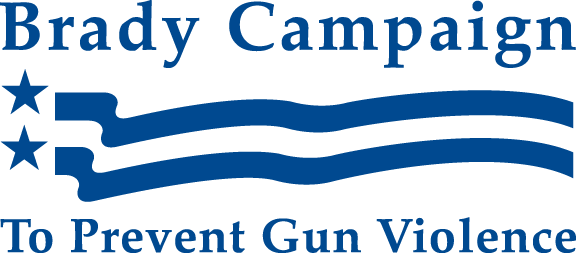
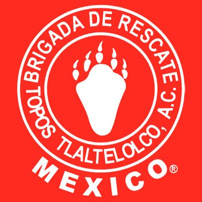

In a world that has never been more connected, we often find ourselves retreating to certain regional bubbles. Here you can find breaking news stories from around the world in real time. See different stories pop up on different locations on the map or click below to see an extensive list of breaking news.

United for Puerto Rico is an initiative brought forth by the First Lady of Puerto Rico, Beatriz Rosselló, in collaboration with the private sector, with the purpose of providing aid and support to those affected in Puerto Rico by the passage of Hurricane Irma and Hurricane María. 100% of the proceeds will go to helping the victims affected by these natural disasters in Puerto Rico. |

The Brady Campaign advocates for policy but also for the government to enforce various laws already on its books. Lawyers from the Brady Center represented parents of one of the 2012 Aurora shooting victims who sued companies that sold ammunition to James Holmes (the suit was thrown out, and the plaintiffs were ordered to pay the defendants' attorneys fees). |
|---|---|

Topos México is a nonprofit rescue brigade made up of volunteers that was created after a 1985 earthquake. The group has been helping with recovery and rebuilding after the recent earthquake. |